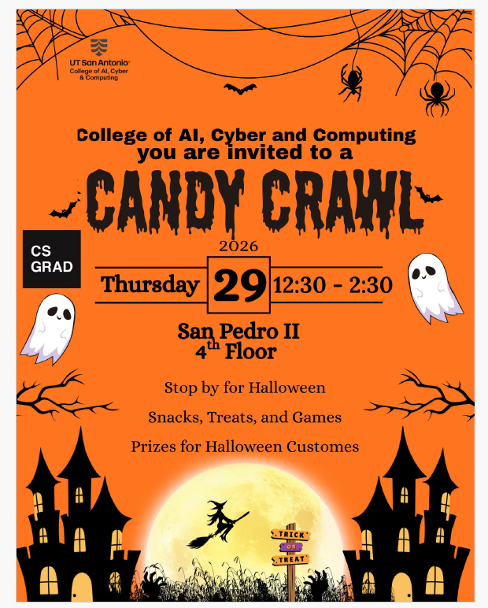
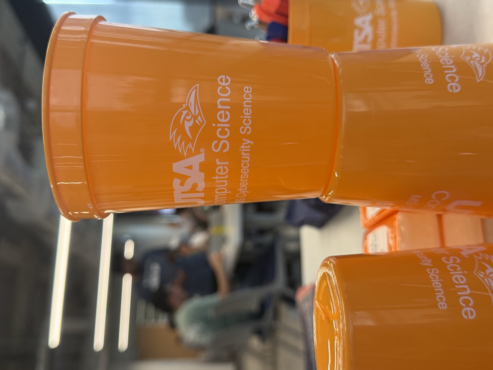

Events
What's coming up next, and a look back at what we've been up to.
Upcoming Events
Join us at our next gathering.
Candy Crawl 2026
Take a break and celebrate Halloween with us at the Candy Crawl 2026!

Enjoy an afternoon of treats, games, and Halloween fun. Come dressed in your favorite costume!
Join the CS Graduate Student Association for games and chances to win prizes. We look forward to seeing you there.
Past Events
Highlights from past CSGRAD gatherings.
-

Game + Mingling
Our fall kickoff! We gathered CS students and faculty in the San Pedro I for an evening of board games, pizza, and hanging out. Codenames, backgammon, and UNO were on rotation while returning members introduced themselves to first-years and swapped stories about labs, courses, and life in San Antonio. A relaxed way to start the semester and put faces to the names on Discord.
With special appearances from the department chair, Dr. Fred Martin and assistant department chair, Dr. Dakai Zhu.